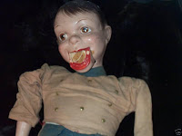
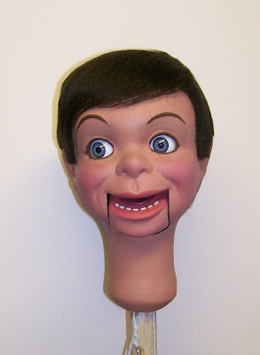

Willie Talk repair & upgrade
12/4/2010
{kind=link}

From Glen Rappold
I recently found one of the large Willie Talk dolls and would like to have you upgrade the head for me to include paint, wig, and moving eyes.
There was much crazing on the head so I (Glen) had to painstakingly remove all of the original paint, sand the head, remove the molded hairline in the front of the head, etc. I have already cut out the eye openings, purchased the eyes I wish to use, repaired the mouth axle, and sealed the head with a coat of acrylic sealer. I gave the head a base coat of paint to show up any areas that needed additional smoothing out so it's pretty close to being ready to go!
* * * * *
From Clinton: The job has been completed - you see the results in the photo below right.
There was much crazing on the head so I (Glen) had to painstakingly remove all of the original paint, sand the head, remove the molded hairline in the front of the head, etc. I have already cut out the eye openings, purchased the eyes I wish to use, repaired the mouth axle, and sealed the head with a coat of acrylic sealer. I gave the head a base coat of paint to show up any areas that needed additional smoothing out so it's pretty close to being ready to go!
* * * * *
{kind=link}

From Clinton: The job has been completed - you see the results in the photo below right.